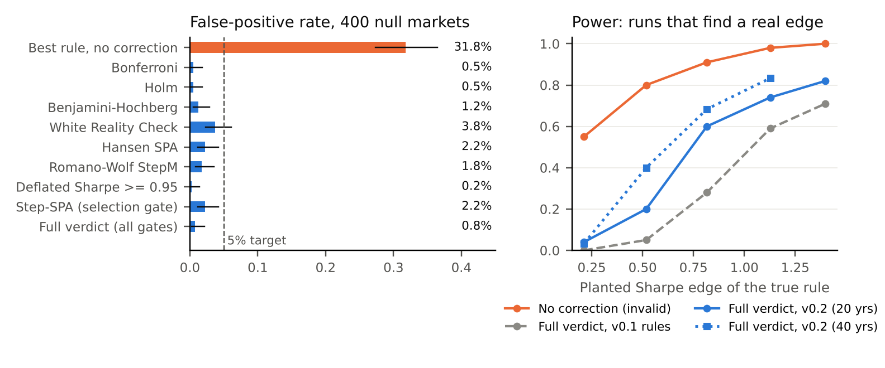
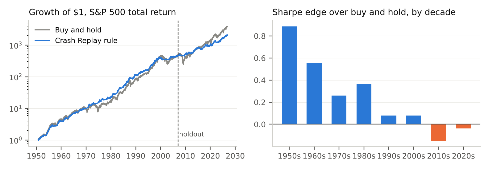
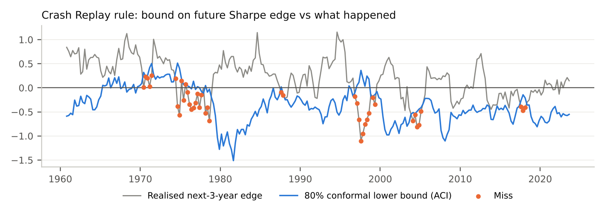
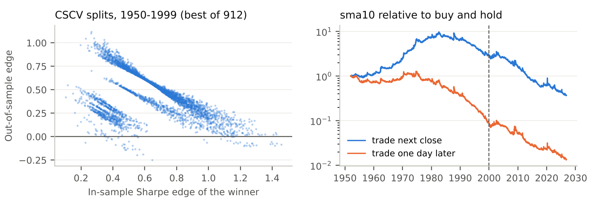
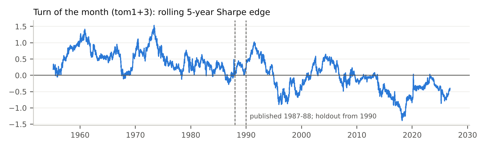

Most published and private backtests are the survivors of a search. If a researcher tries N unrelated rules on noise, the best in-sample Sharpe ratio grows like √(2 ln N) standard errors, so a "t-statistic above 2" is close to guaranteed [3, 12]. Harvey, Liu and Zhu [12] argue that factor research should require t > 3 for this reason, and Bailey et al. [3, 4] show that the probability of backtest overfitting can be estimated directly. The tools exist in separate papers. What is missing in practice is a single, tested procedure that runs them together, records the search honestly, and reports which test killed an idea. That is the aim of this project. It extends two of our earlier pieces of work: the random-trader permutation test in Crash Replay, and the conformal risk bounds used to schedule requests in Pacer.
We use public daily data cached in the repository so every number reproduces offline: the S&P 500 (1950 to 30 Oct 2026) with dividends from Shiller's monthly series, the Nasdaq Composite (1972+) and Dow (1992+) as price indexes, the 3-month T-bill (FRED TB3MS, lagged one month) as cash, and NBER recession dates. A rule maps information at the close of day t to a position wt in [-1, 1] that earns the excess return from t to t+1. A unit test perturbs all future prices and checks that past positions do not change. Each change in position pays
cost = |Δw| · ( s/2 + f + Y · σd · √( |Δw| · AUM / ADV ) ),
a half-spread, a fee, and the square-root market-impact law [1, 24] with daily volatility σd. Defaults are 1 bp, 0.5 bp, Y = 1, $10M of capital and $20B of daily volume for the traded vehicle (an index ETF or future); a harsh scenario uses 5x spread and fee and 2x impact. Capacity is the largest AUM at which the edge stays positive.
Like-for-like comparison. Timing rules on an index mostly change exposure. To avoid crediting a rule for holding less risk, each rule's net excess return and the benchmark's (buy and hold) are scaled to 10% annual volatility before subtracting. The resulting active return dk,t has a mean proportional to the Sharpe-ratio edge, and every test below is a test on d.
Costs. The edge must be positive after realistic and after harsh costs. Timing. A circular-shift permutation test: slide the whole position series against the returns by s days. Positions keep their autocorrelation, holding periods and average exposure; returns keep theirs; only the alignment is broken. We exclude shifts that would pair a position with a return it was computed from, and evaluate all admissible shifts exactly with FFTs. We also report Crash Replay's original random-trader test for comparison. Selection. One shared stationary bootstrap [20] of the T×K active-return matrix (automatic block length [21, 18]) gives White's Reality Check [25], Hansen's SPA test [11] and Romano-Wolf StepM adjusted p-values [22]; Holm [13], Benjamini-Hochberg [7] and Benjamini-Yekutieli [8] adjustments are also reported. The gate uses the Step-SPA test of Hsu, Hsu and Kuan [26]: Romano-Wolf's stepdown with Hansen's recentering, so rules that are clearly worse than the benchmark stop inflating the critical value. The candidate passes if its Step-SPA adjusted p-value is at most 0.05. We also report the Deflated Sharpe Ratio [5, 6]; version 0.1 of the tool required DSR ≥ 0.95 as well, which Section 3 shows is far below 5% under the null and costs about half the power, so it is now an optional strict mode. The DSR hurdle is the expected maximum Sharpe of Neff null trials, with Neff = ρ̄ + (1 − ρ̄)N from the mean correlation of the trials. For the variance in the hurdle we use the sampling variance of a zero-Sharpe estimate; the original cross-trial variance is reported too and is stricter when a family contains rules that are genuinely bad. Overfitting. PBO by combinatorially symmetric cross-validation [4] with 16 blocks. Stability. The edge must be positive in both halves and in at least 60% of non-overlapping 3-year blocks, with no OLS-CUSUM break in the mean [19] (Newey-West variance [17]). We also tabulate the edge by decade, trend state, volatility state and recession. Delay. The edge must survive trading one day later. Holdout. If a holdout date is given, the candidate is chosen without it and must keep a positive edge on it. Conformal bound. Walking forward every quarter, we choose a rule on the last 5 years and record its next-3-year edge; the haircut (in-sample minus out-of-sample) is the conformity score. The bound for a new origin is the in-sample edge minus the (1 − αt) quantile of completed past haircuts, with αt updated by Adaptive Conformal Inference [10] once each outcome is known (the same online update as in Pacer). The gate asks that today's forecast, the in-sample edge minus the median past haircut, be above zero: after the decay that past selections suffered, is anything left? The 80% lower bound is reported with it (requiring the bound itself above zero is the strict mode; a 3-year Sharpe ratio is so noisy that even a true edge of 1.0 fails that bound about a quarter of the time). An idea survives only if it passes every gate that applies.
We simulate 400 markets of 20 years from a GARCH(1,1) with Student-t(5) shocks: volatility clusters and tails are fat, but the mean is zero, so no rule can beat buy and hold on Sharpe and every discovery is false. On each we run the 99-rule standard family (trend, crossovers, momentum, reversal, RSI, breakout, Bollinger and trend-with-volatility-target rules), pick the best, and hold out the last 5 years.

Figure 1. Left: share of null markets where each method calls the best rule real, with 95% Wilson intervals. Right: power when a real trend effect is planted (x-axis: the Sharpe edge it creates for a 100-day trend rule, measured on 400 years of simulated data).
A plain test on the best rule is "significant" in 32% of null markets, six times the nominal rate even though the rules share a common benchmark. Every correction brings this to 5% or less: Holm 0.5%, BH 1.2%, Reality Check 3.8%, SPA 2.2%, Romano-Wolf 1.8%, DSR 0.2%. The full verdict passes 0.8% (2.2% upper bound); the Step-SPA selection test alone 2.2%. The timing gate alone, applied to the selected rule, fires in 55% of null markets: a single-rule test is only valid for a rule fixed in advance, which is why selection is its own gate. Mean PBO under the null is 0.49, as theory predicts.
Single-rule calibration. For rules fixed in advance (Table 1), the circular-shift test rejects close to 5% with and without a market drift. Crash Replay's random-trader test does not: when the market has a positive drift it rejects up to 19% of the time, because random traders who switch at random dates spend about half their time in the market while a trend rule is invested most of the time. It rewards exposure as if it were skill. This is a flaw in our earlier project that this framework found and fixes.
| Fixed rule, 400 markets | Circular shift, no drift | Random trader, no drift | Circular shift, 6% drift | Random trader, 6% drift |
|---|---|---|---|---|
| sma200 | 3.5% | 5.0% | 6.0% | 17.5% |
| cross50x200 | 6.8% | 3.8% | 7.8% | 14.0% |
| tsmom126 | 5.8% | 6.5% | 6.0% | 19.2% |
Table 1. Rejection rates at the 5% level when the rule has no skill. Monte Carlo error is about ±2.2 points.
Conformal coverage. On 50 null markets of 60 years (182 origins each), the ACI bound missed 21.2% of the time against a 20% target (sd 2.8% across runs); the fixed split-conformal quantile missed 23.3%, because overlapping windows and selection make scores only approximately exchangeable. ACI's correction is what keeps the bound honest.
Power. A filter that rejects everything is useless, so we tuned for power without giving up the 5% limit. Version 0.1 required both DSR ≥ 0.95 and an 80% conformal bound above zero; on the null it passed nothing, a sign of wasted strictness. Diagnosing the failures on planted-signal markets showed the DSR requirement alone blocked about 60% of true edges that Romano-Wolf accepted. Version 0.2 gates on Step-SPA and the conformal forecast instead. With 20 years of data the full verdict now finds a planted edge of 0.8 Sharpe 60% of the time (v0.1: 28%), 1.1 Sharpe 74% (v0.1: 59%) and 1.4 Sharpe 82% (v0.1: 71%), while the null rate stays at 0.8%. More data is the other lever: with 40 years, a 0.8-Sharpe edge is found 68% of the time and a 0.5-Sharpe edge 40%. The remaining misses are mostly the holdout and PBO gates, which a true but modest edge fails by chance on 5 years of data. Edges of a few tenths of a Sharpe point cannot be confirmed from one index's daily data by any valid test.
| Idea and sample | Net edge | Costs | Timing | Selection | Overfit | Stability | Delay | Holdout | Conformal | Verdict |
|---|---|---|---|---|---|---|---|---|---|---|
| Crash Replay rule, S&P 500, 1951-2006 (holdout 2007+) | +0.20 | pass | pass | FAIL | pass | pass | pass | pass | pass | fails |
| Crash Replay rule, Nasdaq, 1973-2026 | +0.29 | pass | pass | FAIL | pass | pass | pass | n/a | pass | fails |
| Crash Replay rule, Dow, 1993-2026 | -0.12 | FAIL | FAIL | FAIL | pass | FAIL | FAIL | n/a | FAIL | fails |
| Best of 912 rules (sma10), 1951-1999 (holdout 2000+) | +0.51 | pass | pass | pass | pass | FAIL | FAIL | FAIL | pass | fails |
| Turn of the month (tom1+3), 1950-1989 (holdout 1990+) | +0.50 | pass | pass | pass | pass | pass | pass | FAIL | FAIL | fails |
Table 2. Gate results. Net edge is the Sharpe ratio of the rule minus that of buy and hold after realistic costs, on the design sample. Search family: the 98-rule standard family for the Crash Replay rule, 912 rules for data mining, 13 calendar variants for the turn of the month.
Crash Replay pits the player against a "quant": invested only while the S&P 500 is above its 200-day average, sized to a 15% volatility target. Inside the game's five crashes it looks excellent (Table 3): it lost far less in 2008, 1987, 2000-02 and 2022. But the crashes were chosen because they are crashes, the setting where trend rules do best, and the rule lagged in the COVID rebound.
| Crash window | Rule | Buy and hold | Rule max DD | B&H max DD | Beats random traders |
|---|---|---|---|---|---|
| 2008 Financial Crisis | 2% | -23% | 18% | 56% | 64% |
| Black Monday 1987 | 8% | -8% | 10% | 34% | 68% |
| Dot-com bust | 26% | -51% | 20% | 80% | 93% |
| COVID crash | 8% | 22% | 15% | 34% | 47% |
| 2022 rate shock | 12% | -10% | 11% | 37% | 80% |
Table 3. Total return inside each Crash Replay window after costs.
On the full record the picture is more modest. The rule's Sharpe edge is +0.20 on 1951-2006 and survives costs (capacity about $3.2B) and delay. It fails the selection gate: Step-SPA p = 0.24 against the other 97 trend-family rules (DSR 0.35). On the Nasdaq it comes closer (Step-SPA p = 0.08) but still misses. The edge has also decayed decade by decade, from +0.89 in the 1950s to -0.15 in the 2010s (Figure 2), with halves of +0.43 and +0.03. After 2007, the year the 200-day rule was popularized [9], it kept its drawdown control (max drawdown 18% vs 56%) and a small Sharpe edge of +0.06 (bootstrap p = 0.36). It replicates in direction on the Nasdaq (+0.29) and fails on the Dow since 1993 (-0.12). The honest summary: a sensible risk-control rule that reduces drawdowns, whose return edge cannot be distinguished from the best of a search.

Figure 2. The Crash Replay rule on the S&P 500 after costs, and its Sharpe edge by decade.

Figure 3. 80% conformal lower bound on the next-3-year edge at each quarter (blue) against the realised edge (gray). Misses: 17% over 252 origins. Today's bound is -0.36: the data cannot promise a positive edge.
We search 912 rules (fine grids of trend, crossover, momentum, reversal, RSI, breakout, Bollinger, volatility-target and calendar rules) on 1951-1999 and hold out 2000-2026, as in Sullivan, Timmermann and White [23]. The winner, sma10 (long when the index closes above its 10-day average), has a net edge of +0.51 and passes the Holm (p = 0.002), Romano-Wolf (p = 0.002) and SPA (p = 0.002) corrections, and so passes our selection gate (Step-SPA p = 0.002). Many researchers would stop here. The other gates do not: the edge turns to -0.32 if trades happen one day later, CUSUM finds a break near 1980, and on the holdout the edge is -0.49. The likely cause is known: daily index returns before the 1980s were positively autocorrelated because many component stocks traded rarely, so yesterday's index move predicted today's [15]. That pattern is real in the data but could not be traded at index prices, and it is gone. This is the case that shows why multiple-testing corrections alone are not enough.

Figure 4. Left: CSCV splits of the 1950-1999 search (in-sample winner's edge vs its out-of-sample edge). Right: the winner relative to buy and hold after costs, trading at the next close and one day later; the dashed line marks the holdout.
Stocks have historically earned much of their return around the turn of the month [2, 14]. We search 13 variants on 1950-1989 and hold out 1990-2026. The best, tom1+3 (hold the last trading day and the first three of each month), passes every statistical gate on the design sample: Step-SPA p = 0.021, DSR 0.96, Romano-Wolf p = 0.021, PBO 0.10, stable halves. On the holdout its edge is -0.19. This matches McLean and Pontiff's finding that anomalies weaken after publication [16]. A real effect in one era is not a forecast.

Figure 5. Rolling 5-year Sharpe edge of the turn-of-the-month rule.
(1) The search record is self-reported. Every selection-adjusted test is only as honest as the family passed to it; rules tried and forgotten are not counted. (2) Null models are models. The GARCH-t null has no regime changes; the circular-shift null keeps each series' own dependence but not their joint dependence at other lags. (3) Low power. Section 3 shows modest true edges are usually rejected on 20 years of daily data. (4) Index data only. Results are for three US indexes, mostly long-only timing; dividends are monthly approximations for the S&P 500 and missing for the Nasdaq and Dow. Costs assume an index ETF or future at today's liquidity, which flatters the early decades. (5) Scaling uses full-sample volatility, a mild look-ahead that does not change Sharpe ratios but affects the bootstrap tests' scale. (6) Neff is an approximation, and DSR assumes trials are comparable. (7) Conformal guarantees are marginal and approximate: coverage is checked empirically, not proved, for overlapping windows. (8) No result here is investment advice; the framework says when an idea is not supported, never that one will make money.
pip install -e . then btv validate --market spx --candidate trend200_vt15_20.
python scripts/null_harness.py and python scripts/case_studies.py regenerate every
number and figure (about 20 and 10 minutes on 4 CPU cores); python scripts/build_paper.py
rebuilds this PDF from the result files. The data snapshot is in data/raw; 29 unit tests and CI
check the statistics, the no-look-ahead property and the pipeline. Code: MIT license.
Built with AI-assisted development (Claude Code). Research and education only; not investment advice.